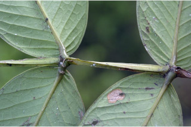
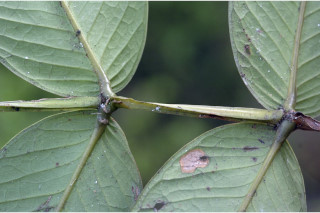

| Habit : | Large shrubs ca. 4 m tall. |
| Leaves : | Leaves simple , opposite , decussate ; petiole sessile or subsessile (ca. 0.2 cm long), glabrous ; lamina 20-40 x 6-14 cm, long lanceolate and tapering into acuminate apex , base rounded or subcordate , margin entire , thickly coriaceous ; midrib canaliculate above; secondary_nerves strong, parallel , and joining into intramarginal_nerve , ca. 24 pairs; tertiary_nerves broadly reticulate . |
| Inflorescence / Flower : | Inflorescence axillary , lax pedunculate , umbellate cymes ; peduncle 6-12 cm long, stout, 4-angled ; flowers many, bluish violet. |
| Fruit and Seed : | Berry , globose , 0.8-1.2 cm diameter, crowned by calyx limb , dark purple when ripe; seed 1. |


 
